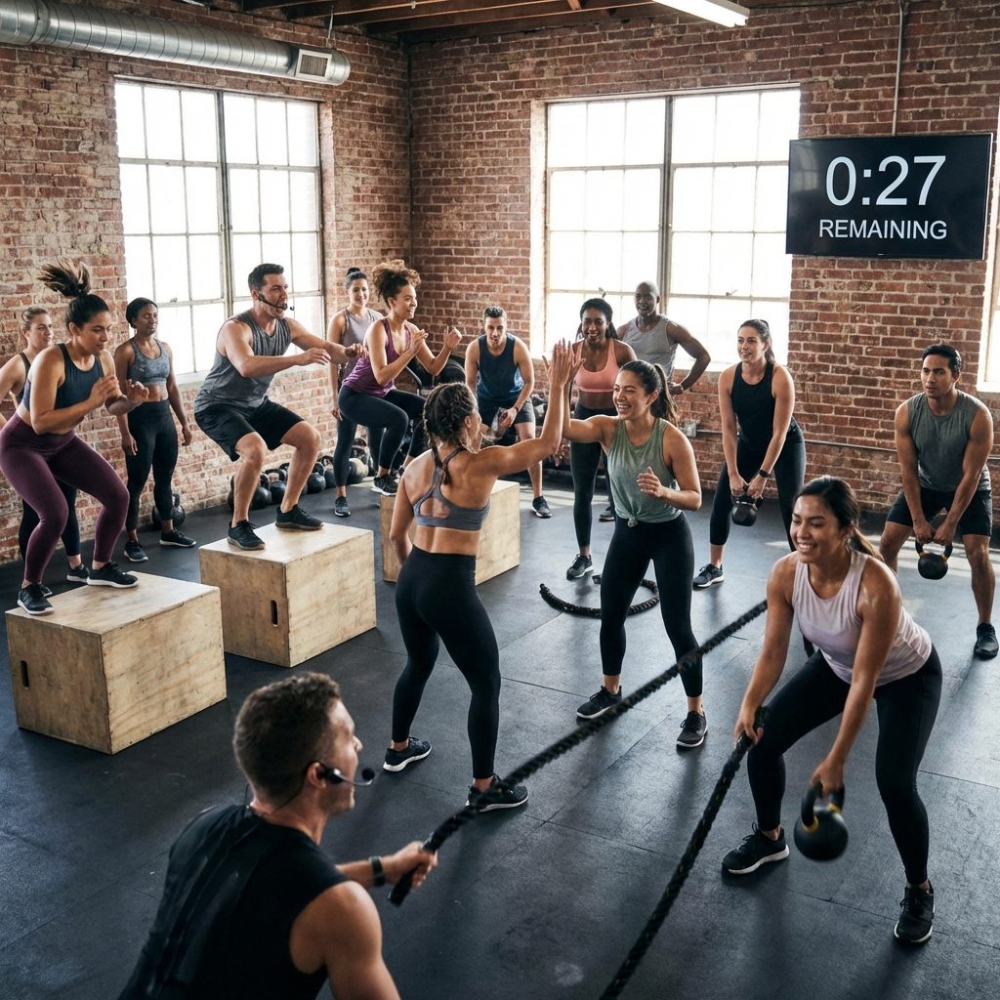

Apa Itu Strength Training?
Strength training, atau latihan kekuatan, adalah jenis latihan fisik yang dirancang untuk meningkatkan kekuatan otot dan daya tahan tubuh. Berbeda dengan cardio yang fokus pada sistem kardiovaskular, strength training menargetkan pembangunan massa otot melalui resistensi atau beban.
Latihan ini tidak hanya untuk atlet atau binaragawan. Setiap orang, terlepas dari usia atau tingkat kebugaran, dapat memperoleh manfaat luar biasa dari strength training. Yang terpenting adalah memulai dengan benar dan konsisten.
"Strength training bukan tentang menjadi yang terkuat, tetapi tentang menjadi versi terbaik dari diri Anda sendiri. Setiap repetisi adalah investasi untuk masa depan yang lebih sehat." - Sarah Johnson, Founder Haii.run Fitness
Manfaat Strength Training untuk Pemula
Manfaat Fisik
Strength training memberikan berbagai manfaat fisik yang signifikan:
- Meningkatkan Massa Otot: Membantu membangun dan mempertahankan massa otot yang cenderung menurun seiring bertambahnya usia.
- Memperkuat Tulang: Latihan beban meningkatkan kepadatan tulang, mengurangi risiko osteoporosis.
- Meningkatkan Metabolisme: Otot membakar lebih banyak kalori bahkan saat istirahat, membantu manajemen berat badan.
- Meningkatkan Postur: Otot yang kuat mendukung tulang belakang dan meningkatkan postur tubuh.
- Mengurangi Risiko Cedera: Otot dan sendi yang kuat lebih tahan terhadap cedera dalam aktivitas sehari-hari.
Manfaat Mental
Selain manfaat fisik, strength training juga memberikan dampak positif pada kesehatan mental:
- Meningkatkan Kepercayaan Diri: Melihat progress dan mencapai target latihan meningkatkan self-esteem.
- Mengurangi Stres dan Kecemasan: Latihan fisik melepaskan endorfin yang meningkatkan mood.
- Meningkatkan Kualitas Tidur: Aktivitas fisik teratur membantu tidur lebih nyenyak.
- Meningkatkan Fokus Mental: Latihan teratur meningkatkan fungsi kognitif dan konsentrasi.
Mulai Perjalanan Fitness Anda Bersama Kami!
Dapatkan program personal training yang disesuaikan dengan kebutuhan dan tujuan Anda. Konsultasi GRATIS dengan trainer profesional kami!
Teknik Dasar yang Harus Dikuasai
Sebelum memulai program strength training, penting untuk menguasai teknik dasar gerakan compound (gerakan yang melibatkan banyak otot sekaligus):
- Squat (Jongkok): Gerakan fundamental untuk melatih kaki, glutes, dan core. Pastikan lutut tidak melewati jari kaki dan punggung tetap lurus.
- Deadlift (Angkat Beban dari Lantai): Melatih seluruh tubuh bagian belakang. Fokus pada hip hinge movement dan jaga punggung tetap netral.
- Push-up: Melatih dada, bahu, dan triceps. Jaga tubuh tetap lurus dari kepala hingga kaki.
- Pull-up/Rows: Melatih punggung dan biceps. Fokus pada menarik dengan otot punggung, bukan hanya lengan.
- Plank: Melatih core stability. Jaga tubuh tetap lurus dan hindari menurunkan pinggul.

Demonstrasi teknik dasar strength training dalam group class di Haii.run Fitness
Program Latihan untuk Pemula
Berikut adalah program latihan 3 hari per minggu yang ideal untuk pemula:
Hari 1: Upper Body (Tubuh Bagian Atas)
- Push-ups: 3 set x 8-12 repetisi
- Dumbbell Rows: 3 set x 10-12 repetisi
- Shoulder Press: 3 set x 8-10 repetisi
- Bicep Curls: 2 set x 12-15 repetisi
- Tricep Dips: 2 set x 10-12 repetisi
Hari 2: Lower Body (Tubuh Bagian Bawah)
- Squats: 3 set x 10-15 repetisi
- Lunges: 3 set x 10 repetisi per kaki
- Deadlifts: 3 set x 8-10 repetisi
- Calf Raises: 3 set x 15-20 repetisi
- Glute Bridges: 2 set x 12-15 repetisi
Hari 3: Full Body + Core
- Burpees: 3 set x 8-10 repetisi
- Mountain Climbers: 3 set x 20 repetisi
- Plank: 3 set x 30-60 detik
- Russian Twists: 3 set x 20 repetisi
- Leg Raises: 2 set x 12-15 repetisi
📖 BACA JUGA:
Meal Prep 101: How to Plan Your Weekly NutritionKesalahan yang Harus Dihindari
Pemula sering melakukan kesalahan yang dapat menghambat progress atau bahkan menyebabkan cedera:
- Mengangkat Beban Terlalu Berat: Mulailah dengan beban ringan dan fokus pada teknik yang benar.
- Melewatkan Pemanasan: Selalu lakukan pemanasan 5-10 menit sebelum latihan untuk mengurangi risiko cedera.
- Tidak Konsisten: Hasil datang dari konsistensi. Latihan 3x seminggu lebih baik daripada 1x seminggu dengan intensitas tinggi.
- Mengabaikan Istirahat: Otot tumbuh saat istirahat, bukan saat latihan. Berikan waktu recovery yang cukup.
- Tidak Tracking Progress: Catat beban, repetisi, dan set untuk melihat perkembangan dan menyesuaikan program.
Tips Sukses untuk Pemula
Untuk memaksimalkan hasil strength training Anda, ikuti tips berikut:
- Mulai dengan Bodyweight: Kuasai gerakan dengan berat badan sendiri sebelum menambah beban eksternal.
- Progressive Overload: Tingkatkan beban atau repetisi secara bertahap setiap 1-2 minggu.
- Fokus pada Form: Teknik yang benar lebih penting daripada beban yang berat.
- Nutrisi yang Tepat: Konsumsi protein cukup (1.6-2.2g per kg berat badan) untuk mendukung pertumbuhan otot.
- Tidur Cukup: Targetkan 7-9 jam tidur berkualitas setiap malam.
- Hire a Trainer: Personal trainer dapat membantu Anda memulai dengan benar dan menghindari kesalahan umum.
Kesimpulan
Strength training adalah investasi terbaik untuk kesehatan jangka panjang Anda. Dengan memulai dari dasar, fokus pada teknik yang benar, dan konsisten dalam latihan, Anda akan melihat transformasi luar biasa dalam 8-12 minggu pertama.
Ingat, setiap orang memulai dari nol. Yang terpenting adalah mengambil langkah pertama dan tetap konsisten. Jangan takut untuk meminta bantuan dari profesional, karena investasi dalam personal trainer di awal perjalanan Anda dapat menghemat waktu dan mencegah cedera.
Mulai hari ini, dan jadilah versi terbaik dari diri Anda!